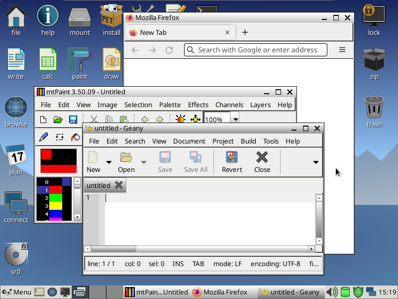

Vanilla Dpup is a small and lightweight operating system based on Puppy Linux and Debian.
It tries to strike the right balance between small and practical. Like the former, it feels like a journey back to the 2000s and features a curated selection of preconfigured, lightweight applications for a variety of daily computing tasks, from web browsing to backup and recovery. Like the latter, it features wide hardware support and compatibility with the world's top collections of free software.
This release series is based on Debian Bullseye packages and cuts the amount of technical debt and legacy cruft accumulated in Puppy Linux throughout the years, to prepare for big and disruptive changes like the deprecation of X.Org and GTK+ 2 in favor of Wayland and GTK+ 3 or 4, and the adoption of overlay as a replacement for aufs.
Those familiar with Puppy Linux will enjoy improved responsiveness, low resource usage, reliable package management with apt-get, GTK+ 3 ports of classic themes, GTK+ 3 ports of lightweight applications lost to time, Bluetooth audio support, fast web browsing thanks to DNS caching, ad blocking and privacy tweaks, shell completion, man pages, keyboard shortcuts, easy installation of drivers and multi-language support.
Until this release series is phased out, the older package base makes Vanilla Dpup 9.3.x lighter, smaller and more suitable for very old hardware that cannot run 10.0.x comfortably.
Download latest release (32-bit) Download latest release (64-bit)This release series tracks Debian Bookworm. Vanilla Dpup 10.0.x looks like 9.3.x, but it's bigger, it's heavier, and there's new technology under the hood.
It uses the much newer 6.1.x kernel series, modernizes Bluetooth audio and screen capture support by replacing PulseAudio with PipeWire, adds Landlock-based sandboxing for internet-facing applications and adds a Wayland flavor.
| Flavor | X.Org | Xwayland |
|---|---|---|
| Tagline | The safe bet | The best of both worlds, mostly |
| Ease of Migration from 9.3.x | Trivial | Easy |
| VSync | Requires compositor | Built-in |
| Suitable for Gaming | Yes | Mostly yes |
| Range of Supported GPUs | Wide | Limited |
| Multi-Monitor Support | Normal | With caveats |
| HiDPI Support | Limited | With caveats |
| Flatpak Support | Limited | Better |
This version is in early development, tracks Debian Sid and completes the multi-year migration effort to Wayland by replacing the traditional Puppy desktop with labwc and sfwbar.
Download latest beta build (32-bit) Download latest beta build (64-bit)Vanilla Dpup is not affiliated with Debian. Debian is a registered trademark owned by Software in the Public Interest, Inc.